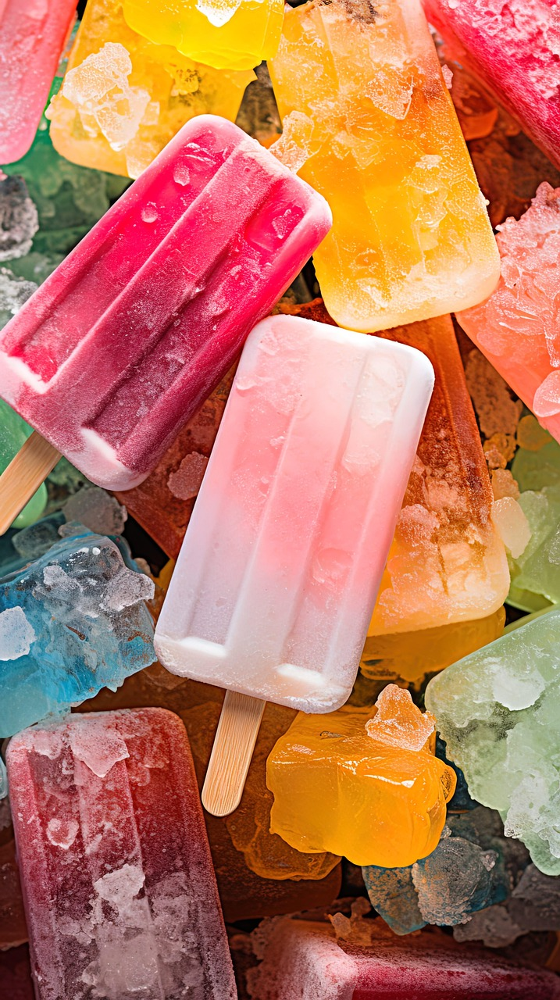

Home
Homemade Fruit Popsicles

Descriptions
Simple and wholesome fruit popsicles. My mom used to help us make these when we were kids and I still enjoy them years later. Use honey as an alternate sweetener, and blend the fruit to be either chunky or smooth.
Ingredients
8 serving
- 2 cups fresh blueberries, raspberries, strawberries and sliced bananas, mixed
- 2 cups plain or vanilla yogurt
- ¼ cup white sugar
- 8 small paper cups
- 8 popsicle sticks
Steps
- Place the mixed blueberries, raspberries, strawberries, sliced bananas, yogurt, and sugar into a blender. Cover, and blend until fruit is chunky or smooth, as desired.
- Fill paper cups 3/4 full with fruit mixture. Cover the top of each cup with a strip of aluminum foil. Poke a popsicle stick through the center of the foil on each cup.
- Place the cups in the freezer for at least 5 hours. To serve, remove foil and peel off the paper cup.